digital ids
view markdownnotes from Neuroscience, 5th edition + Intro to neurobiology course at UVA
16 lower
- sensory in dorsal spinal cord, motor in ventral
- farther out neurons control farther out body parts (medial=trunk, lateral=arms,legs)
- one motor neuron (MN) innervates multiple fibers
- the more fibers/neuron, the less precise
- MN pool - group of MNs=motor units
- muscle tone = all your muscles are a little on, kind of like turning on the car engine and when you want to, you can move forward
- more firing = more contraction
- MN types
- fast fatiguable - white muscle
- fast fatigue-resistant
- slow - red muscles, make atp
- muscles are innervated by a proportion of these MNs
- reflex
- whenever you get positive signal on one side, also get negative on other
- flexor - curl in (bicep)
- extensor - extend (tricep)
- proprioceptors (+) - measure length - more you stretch, more firing of alpha MN to contract
- intrafusal muscle=spindle - stretches the proprioceptor so that it can measure even when muscle is already stretched
- $\gamma$ motor neuron - adjusts intrafusal muscles until they are just right
- keeps muscles tight so you know how much muscle is streteched
- if alpha fires a lot, gamma will increase as well
- high gamma allows for fast responsiveness - brainstem modulators (serotonin) also do this
- opposes muscle stretch to keep it fixed
- spindle -> activates muscles -> contracts -> turns off
- sensory neurons / gamma MNs innervate muscle spindle
- $\gamma$ motor neuron - adjusts intrafusal muscles until they are just right
- homonymous MNs go into same muscle, antagonistic muscle pushes other way
- golgi tendon (-) measures pressure not stretch
- safety switch
- inhibits homonymous neuron so you don’t rip muscle off
- ALS = Lou Gehrig’s disease
- MNs are degenerating - reflexes don’t work
- progressive loss of $\alpha$ MNs
- last neuron to go is superior rectus muscle -> people use eyes to talk with tracker
- CPG = central pattern generator
- ex. step on pin, lift up leg
- walking works even if you cut cat’s spinal cord
- collection of interneurons
17 upper
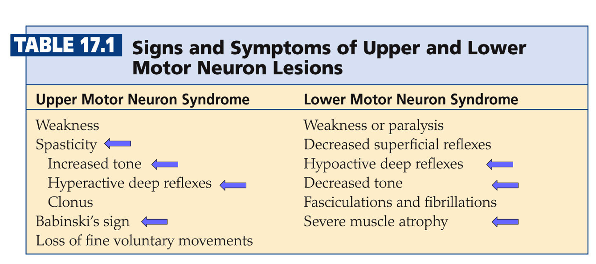
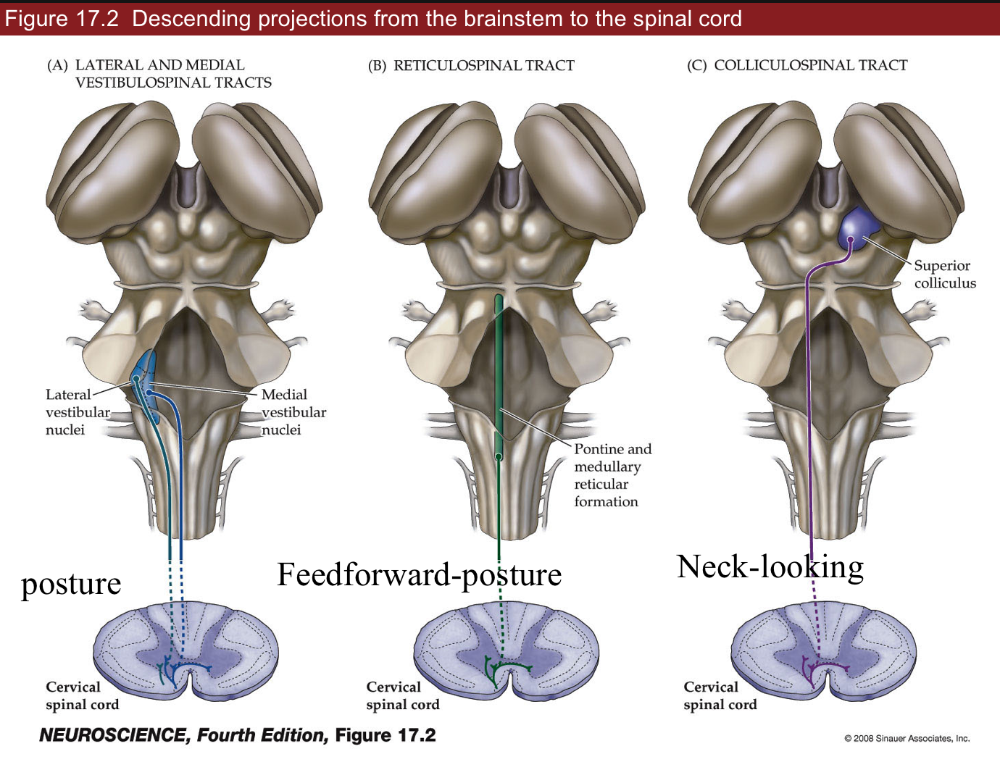
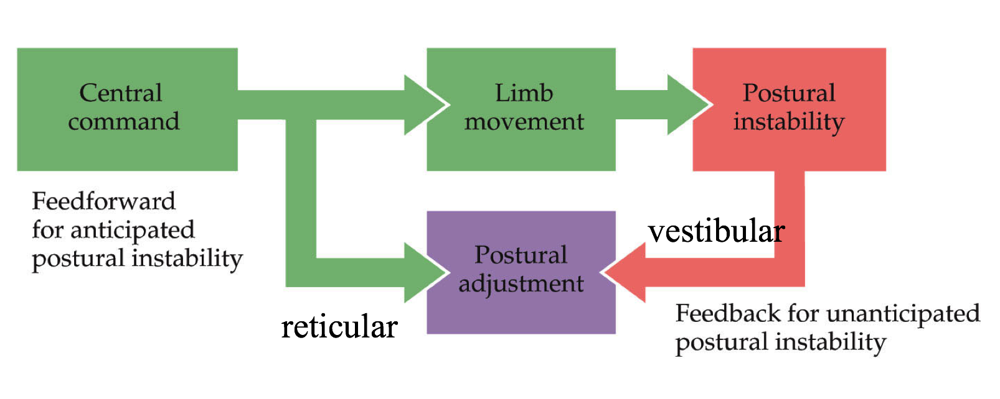
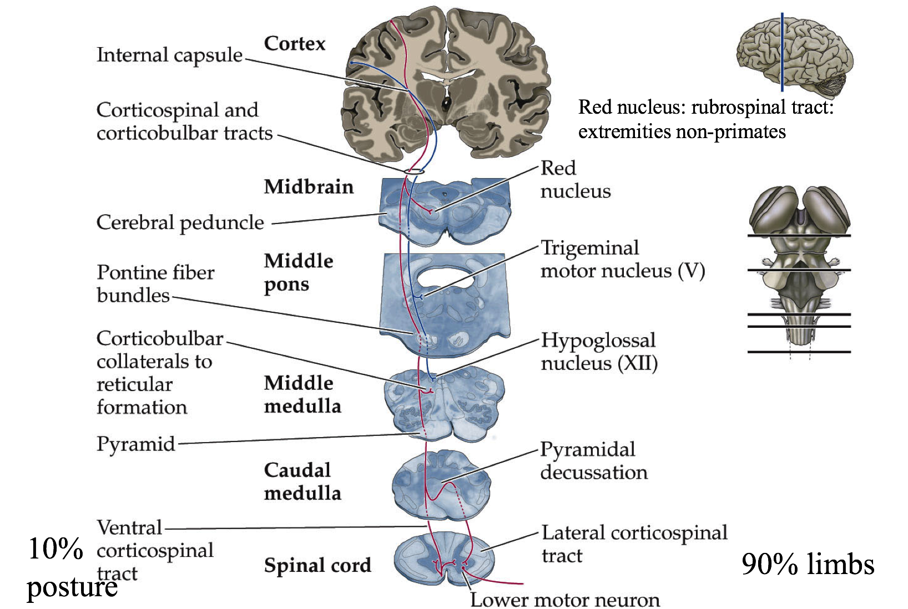
- cAMP is used by GPCR
- lift and hold circuit
- ctx->lateral white matter->lateral ventral horn->limb muscles
- lateral white matter - most sensitive to injury
- brainstem->medial white matter->medial horn->trunk
- medial white matter -> goes into trunk
- ctx->lateral white matter->lateral ventral horn->limb muscles
- bulbarspinal tracts
- lateral and medial vestibulospinal tracts - feedback
- automated system - not much thinking
- posture - reflex
- too slow for learning surfing
- reticular - feedforward = anticipate things before they happen
- command / control system for trunk muscles (posture)
- feedforward - not a reflex, lean back before opening drawer
- caudal pontine - feeds into spinal cord
- colliculospinal tract
- has superior colliculus - eye muscles, neck-looking
- see ch. 20 - reflex
- lateral and medial vestibulospinal tracts - feedback
- corticular bulbar tract (premotor->primary motor->brainstem)
- motor cortexes - this info is descending
- can override reticular reflexes in reticular formation
- premotor cortex (P2) - contains all actions you can do
- has mirror neurons that fire ahead of primary neurons
- fire if you think about it or if you do it
- has mirror neurons that fire ahead of primary neurons
- primary motor cortex (P1)
- layer 1 ascending
- layer 4 input
- layer 5 - Betz cells - behave like 6 (output)
- layer 6 - descending output
- has map like S1 does
- Jacksonian march get seizure that goes from feet to face (usually one side)
- epileptic seizure - neurons fire too much and fire neurons near them
- insular - flashes of moods
- pyriform - flashes of smells
- epileptic seizure - neurons fire too much and fire neurons near them
- Jacksonian march get seizure that goes from feet to face (usually one side)
- Betz cells - if they fire, you will do something
- dictate a goal, not single neuron to fire
- axons to ventral horn of spinal cord
- lesions
- upper
- spasticity - unorganized leg motions
- increased tone - tight muscles
- hyperactive deep reflexes
- ex. babinski’s sign
- curl foot down a lot because you don’t know how much to curl
- curling foot down = normal plantar
- more serotonin can cause this
- lower
- hypoactive deep reflexes
- decreased tone
- severe muscle atrophy
- upper
- pathways
- Betz cell
- 90% cross midline in brainstem - control limbs
- 10% don’t cross - trunk muscles
- Betz cell
18 basal ganglia (choose what you want to do)
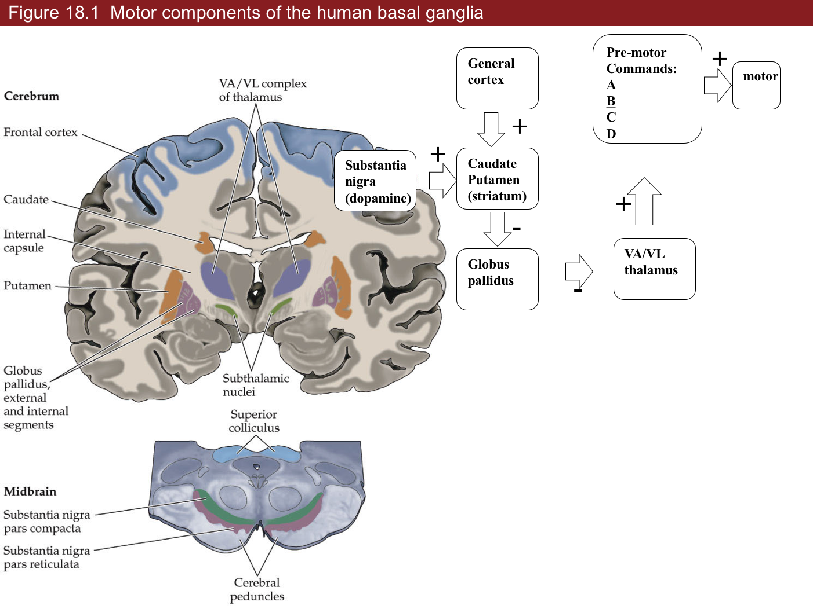
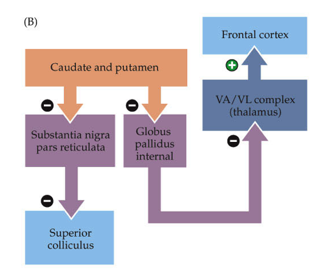
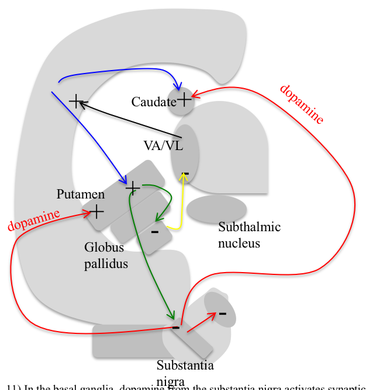
- “who you are”
- outputs
- brainstem
- motor cortex
- 4 loops (last 2 aren’t really covered)
- motor loops
- body movement loop
- SnC -> S (CP) -> (-) Gp -> (-) VA/VL -> motor cortex
- oculomotor loop
- cortex -> caudate -> substantia nigra pars reticulata -> superior colliculus
- body movement loop
- non-motor loops 3. prefrontal loop - daydreaming (higher-order function)
- spiny neurons corresponding to a silly idea (alien coming after you) filtered out because not fired enough
- schizophrenia - can’t filter that out
- limbic loop - mood
- has nucleus accumbens
- can make mood better with dopamine
- motor loops
- substantia nigra
- pars compacta - dopaminergic neurons (input to striatum)
- more dopamine = more strength between cortical pyramidal neurons and spiny neurons (turns up the gain)
- dopamine helps activate a spiny neuron
- may be the ones that learn (positive outcome is saved, will result in more dopamine later)
- Parkinson’s - specific loss of dopaminergic neurons
- dopaminergic neurons form melanin = dark color
- when you get down to 20% what you were born with
- know what they need to do - don’t have enough dopamine to act
- treat with L Dopa -> something like dopamine -> take out globus pallidus
- cocaine, amphetamine - too much dopamine
- Huntington’s - death of specific class of spiny neurons
- have uncontrolled actions
- Tourette’s - too much dopamine
- also alcohol
- MPPP (synthetic heroin)
- MPTP looks like dopamine but turns into MPP and kills dopaminergic neurons
- treated with L Dopa to reactivate spiny neurons
- pars reticulata
- doesn’t have dopamine (output from striatum)
- pars compacta - dopaminergic neurons (input to striatum)
- striatum contains spiny neurons
- caudate (for vision) - output to globus pallidus and substantia nigra (pars reticulata)
- putamen - output only to globus pallidus
- each spiny neuron gets input from ~1000 cortical pyramidal cells
- globus pallidus
- each spiny neuron connects to one globus pallidus neuron
- deja vu - spiny neuron you haven’t fired in a while
- VA/VL (thalamus)
- all motor actions must go through here before cortex
- has series of commands of all actions you can do
- has parallel set of betz cells that will illicit those actions
- VA/VL is always firing, globus pallidus inhibits it (tonic connection)
19 cerebellum (fine tuning all your motion)
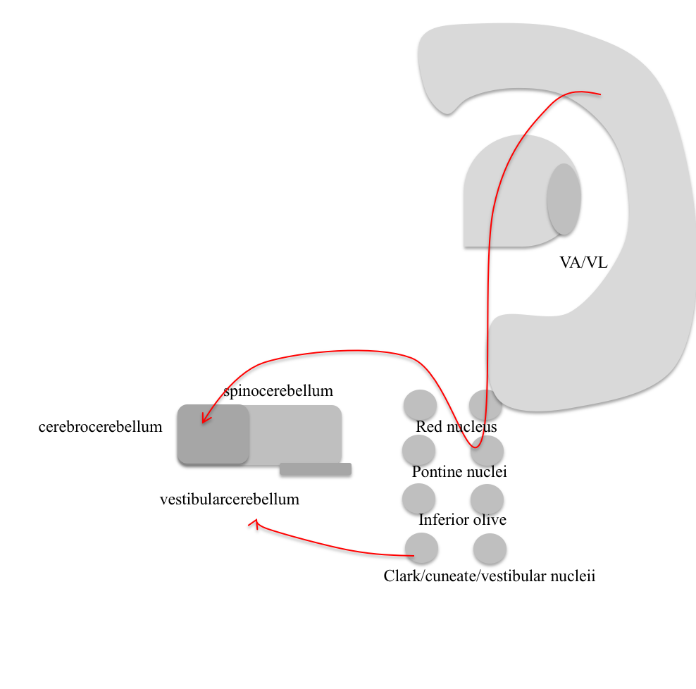
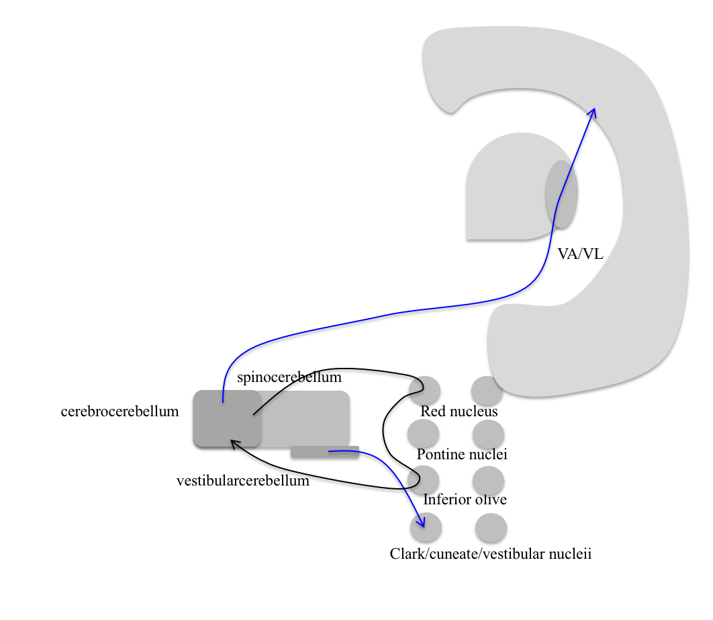
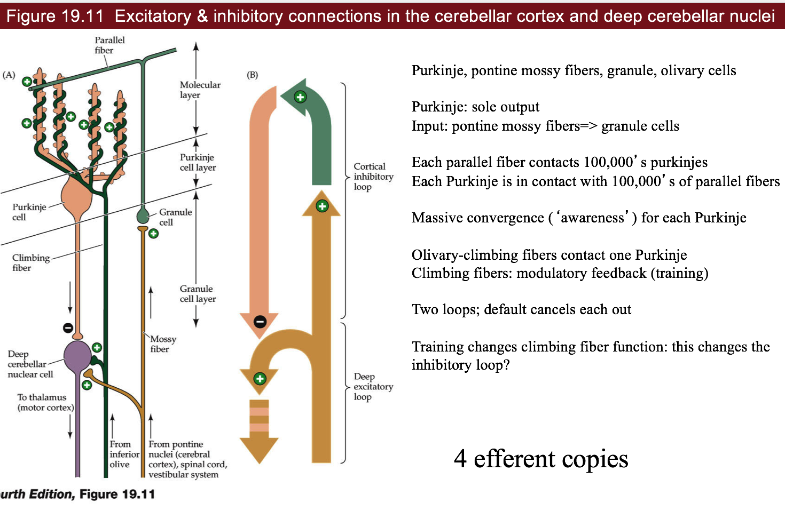
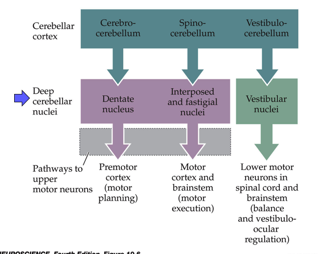
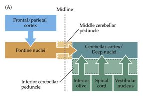
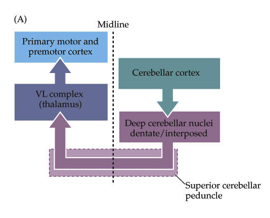
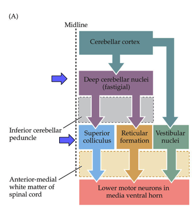
- redundant system - cortex could do all of this, but would be slow
- repeated circuit - interesting for neuroscientists
- all info comes in, gets processed and goes back out
- cerebellum gets motor efferant copy
- all structures on your brain that do processing send out efferent
- cerebellum sends efferant copy back to itself with time delay (through inferior olive)
- cerebrocerebellum
- deals with premotor cortex (mostly motor cortex)
- spinocerebellum = clarke’s nucleus, knows stretch of every muscle, many proprioceptors go straight into here
- motor cortex
- has a map of muscles
- vestibular cerebellum - vestibular->cerebellum->vestibular
- vestibular system leans you back but if wind blows, have to adjust to that
- input
- pontine nuclei (from cortex)
- vestibular nuclei (balance)
- cuneate nucleus (somatosensory from spinal upper body)
- clarke (proprio from spinal lower body)
- processing
- cerebellar deep nuclei
- output
- deep cerebellar nuclei
- go to superior colliculus, reticular formation
- VA/VL (thalamus) - back to cortex
- red nucleus
- deep cerebellar nuclei
- circuit 1 - fine-tuning
- circuit 2 - detects differences, adjusts
- cerebellum -> red nucleus (is an efferant copy) -> inferior olive -> cerebellum
- compare new copy to old copy
- cells
- purkinje cells - huge number of dendrite branches - dead planar allows good imaging
- GABAergic
- (input) mossy fibers -(+)> granule cells (send parallel fibers) -(+)> purkinje cell -(-)> deep cerebellar nuclei (output)
- mossy->granule->parallel fibers connect to ~100,000 parallel fibers
- climbing fiber - comes from inferior olive and goes back to purkinje cell (this is the efferent copy) = training signal
- loops
- deep excitatory loop (climbing/mossy) -(+)-> deep cerebellar nuclei
- cortical inhibitory loop (climbing/granule) -(+)-> purkinje
- the negative is from purkinje to deep cerebellar nuclei
- purkinje cells - huge number of dendrite branches - dead planar allows good imaging
- alcohol
- can create gaps = folia
- long-term use causes degeneration = ataxia (lack of coordination)
20 eye movements/integration
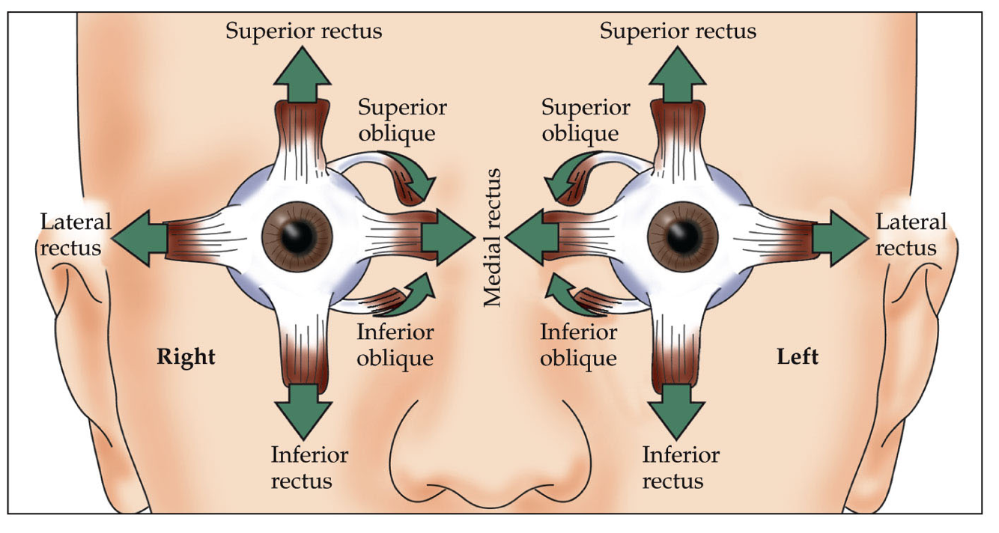
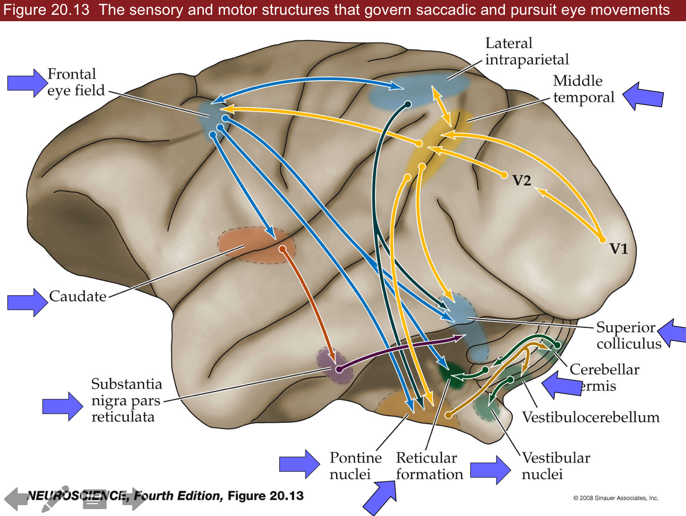
- Broca’s view - look at people with problems
- Ramon y Cajal - look at circuits
- 5 kinds of eye movements
- saccades
- use cortex, superior colliculus (visual info -> LGN -> cortex, 10% goes to brainstem)
- constantly moving eyes around (fovea)
- ~scan at 30 Hz
- 5 Hz=200 ms for cortex to process so pause eyes (get 5-6 images)
- there is a little bit of drift
- can’t control this
- humans are better than other animals at seeing things that aren’t moving
- VOR - vestibular ocular reflex - keeps eyes still
- use vestibular system, occurs in comatose
- fast
- works better if you move your head fast
- optokinetic system - tracks with eyes
- ex. stick head out window of car and track objects as they go by
- slower than VOR (takes 200 ms)
- works better if slower
- reflex
- in cortex (textbooks) but probs brainstem (new)
- smooth pursuit - can track things moving very fast
- suppress saccades and track smoothly
- only in higher apes
- area MT is highest area of motion coding and goes up and comes down multiple ways
- high speed processing isn’t understood
- could be retina processing
- vergence - crossing your eyes
- suppresses conjugate eye movements
- we can control this
- only humans - bring objects up very close
- reading uses this
- saccades
- eye muscles
- rectus
- vertical
- superior
- inferior
- use complicated vertical gaze center
- last to degenerate in ALS
- locked-in syndrome - can only move eyes vertically
- controls oculomotor nucleus
- lateral
- medial
- lateral (controlled by abducens)
- use horizontal gaze center=PPRF which talk to abducens -MLF connects abducents to opposite medial lateral rectus muscle
- oblique - more circular motions
- superior (controlled by trochlear nucleus)
- inferior
- vertical
- everything else controlled by oculomotor nucleus
- rectus
- superior colliculus has visual map
- controls saccades, connects to gaze centers
- takes input from basal ganglia (oculomotor loop)
- also gets audio input from inferior colliculus (hear someone behind you and turn)
- gets strokes
- redundant with frontal eye field in secondary motor cortex
- connects to superior colliculus, gaze center, and comes back
- if you lose one of these, the other will replace it
- if you lose both, can’t saccade to that side
21 visceral (how you control organs, stress levels, etc.)
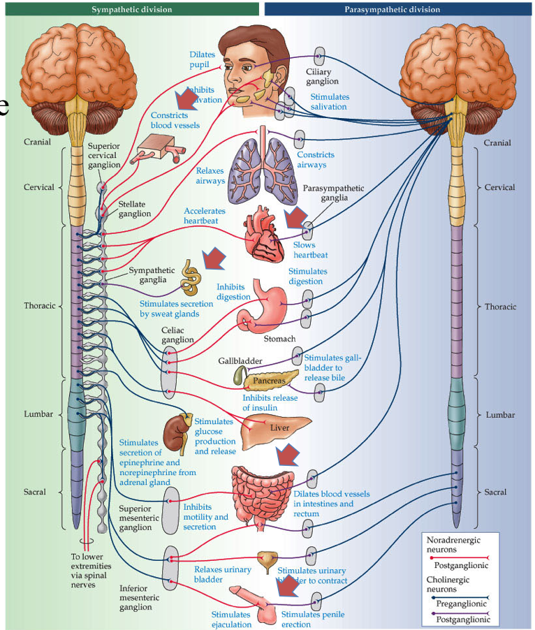
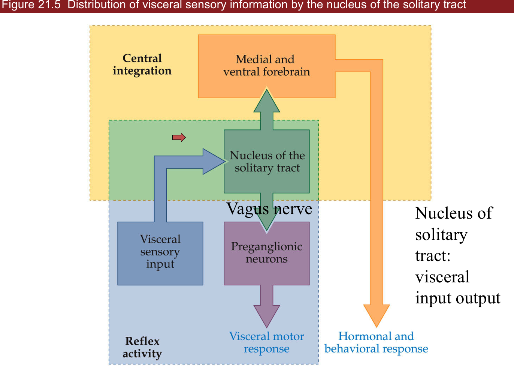
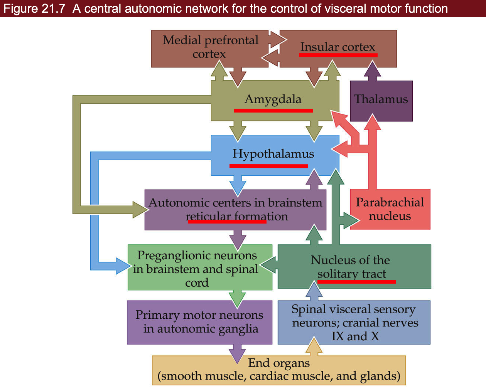
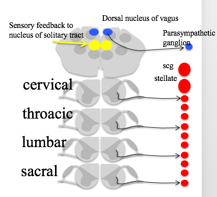
- parasympathetic works against sympathetic
-
divisions
- sympathetic - fight-or-flight (adrenaline)
- functions
- neurons to smooth muscle
- pupils dilate
- increases heart rate
- turn off digestive system
- 2 things with no parasympathetic counterpart
- increase BP
- sweat glands
- location
- neurons in spinal cord lateral horn
- send out neurons to sympathetic trunk (along the spinal cord)
- all outgoing connections are adrenergic
- neurons in spinal cord lateral horn
- beta-adrenergic drugs block adrenaline
- beta agonist - activates adrenaline receptors (do this before EKG)
- parasympathetic - relaxing (ACh)
-
location
- brainstem
- edinger westphal nucleus - pupil-constriction
- salivatory nucleus
- vagus nucleus - digestive system, sexual function
- nucleus ambiguous - heart
-
nucleus of the solitary tract
- all input/output goes through this
- rostral part (front) - taste neurons
- caudal part (back) contains all sensory information of viscera (ex. BP, heart rate, sexual
- sacral spinal cord (bottom) - gut/bladder/genitals
- not parallel to sympathetic – poor design - may cause stress-associated diseases
-
hard to make drugs with ACh
- enteric nervous system - in your gut
- takes input through vagus nerve from vagus nucleus
- also has sensory neurons and sends afferents back to brainstem
- pathway
- insular cortex - what you care about
- amygdala - contains emotional memories
- hypothalamus - controls a lot
- mostly peptinergin neurons
- aging, digestion, mood, straight to bloodstream & CNS
- releases hormones
- ex. leptin - stops you eating when you eat calories
- reticular formation - feedforward, prepares digestion before we eat
- three examples
- heart rate
- starts at nucleus ambiguous
- also takes input from chemoreceptors (ex. pH)
- SA node at heart generates heartbeat - balances Ach and adrenaline
- sympathetic sends info from thoracic spinal cord
- heart sends back baroreceptor afferents
- bladder function
- parasympathetic in sacral lateral horn make you pee (contracts bladder)
- turn off sympathetic NS
- open sphincter muscle (voluntary)
- can also control this via skeletal nervous system
- circuit
- amygdala (can’t pee when nervous)
- pontine micturation center -> parasympathetic preganglionic neurons -> parasympathetic ganglionic neurons
- inhibitory local circuit neurons -> somatic MNs
- sexual function
- Viagra turns on parasympathetic NS
- also gives temporal color blindness
- sympathetic involved in ejaculation
- temporal correlation (“Point and Shoot”)
- Viagra turns on parasympathetic NS
- heart rate